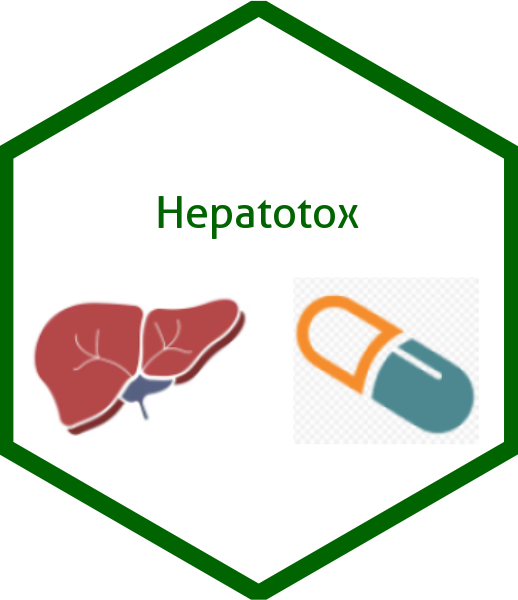

Hepatotox Package

Hepatotox Catalog
The catalog is a series of outputs for a Stage 1 Hepatotoxicity white paper considering a set of aggregate analyses and displays to rule out potential drug-induced liver injury (DILI). The catalog was generated using TERN and random.cdisc.data packages.
This repository provides a collection of hepatotoxicity-related analyses and outputs generated using the R language. The target audience is the clinical trials community, including statisticians, data scientists, and other professionals interested in applying R to clinical trials data.
Shiny App Demo
The following is an output comparing maximum total bilirubin vs. maximum other liver enzymes (ALT, AST, or ALP). Interact with the Shiny App directly below:
Usage
Setup and pre-processing of synthetic data.
Code to produce the output.
The output generated by the given code.
An interactive application that can alternatively be used to produce and interact with the graph.
Interacting with Catalog R Code
The full source code of each article can be viewed by viewing the on the “Source Code” code block at the top of the page and copied using the “Copy" button.
Individual code chunks from within the article can also be viewed and copied. The Reproducibility tab contains session information and allows one to install the packages required to properly run the code.
License
This catalog as well as code examples are licensed under the Apache License, Version 2.0 - see the LICENSE file for details.
Contributing
We welcome contributions big and small to the TLG catalog. Please refer to the Contributing guide for more information on how you can contribute.
Development
This website is built using Quarto and hosted on GitHub Pages.